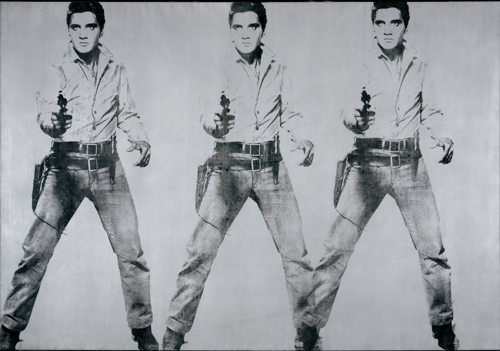

The Miller
Andy Warhol (August 6, 1928 - February 22, 1987) was an American artist who was a leading figure in the visual art movement known as pop art. His works explore the relationship between artistic expression, celebrity culture and advertisement that flourished by the 1960s. After a successful career as a commercial illustrator, Warhol became a renowned and sometimes controversial artist. The Andy Warhol Museum in his native city, Pittsburgh, Pennsylvania, holds an extensive permanent collection of art and archives. It is the largest museum in the United States dedicated to a single artist.
View Larger Map